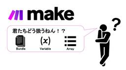

CloudNative Inc. BLOGs
https://blog.cloudnative.co.jp
株式会社クラウドネイティブのブログ。情報システムに関するマニアックな記事から、ちょっと変わった？社風までざっくばらんにご紹介。
フィード
CN、サブドメインテイクオーバーされたってよ
CloudNative Inc. BLOGs
こんにちは、ひろかずです。 タイトルは釣りです。 ある日、メールチェックしていたら社外に公開しているグループメールアドレス宛に「サブドメインテイクオーバーの問題」という件名のメールが届いていたので一筆書きます。 ちなみに […]
2日前
BTCONJP Insight に参加してきました！
CloudNative Inc. BLOGs
セキュリティチームのばーちゃんです！ SaaS管理をテーマとしたBTCONJP Insightに参加したので、自分なりの学びと、印象に残ったことを書いていきます。 3行まとめ はじめに BTCONJP Insightは、 […]
5日前

make 配列からユニーク化した値を取得して操作
CloudNative Inc. BLOGs
はじめに どうも、make屋のたにあんです。最近はmake Communityで回答に励んでいます。打率は1割です。対戦よろしくお願いします。 makeの配列操作に苦労するシチュエーションが多かったですが、今回紹介するS […]
5日前

Ubuntu Publisher 20.04 LTSのEOLおよびNetskope Publisher移行のご案内
CloudNative Inc. BLOGs
Netskope Private Accessを利用されているお客様へ Netskope社より、Ubuntu 20.04 LTSのEOLに伴うUbuntu Publisher 20.04 LTSのEOLおよびPublis […]
6日前

クラウドサービスの選定基準について
CloudNative Inc. BLOGs
はじめに こんにちはおかしんです。SaaSのSSOに関するお話がXで話題になっていたので、もう少し幅広いテーマでクラウドサービスを選定する際に考えるべきことについて書いてみました。 クラウドサービス活用の背景 近年、DX […]
15日前
インシデント訓練に参加して、インシデント発見と対応をやってみた！
CloudNative Inc. BLOGs
学びのまとめ 今回のインシデント訓練を通じて、組織としての対応力を大幅に高めることができました。特に、属人化しない対応の重要性を再認識しました。これからもチーム一丸となって、より良い対応を目指していきます！ はじめに こ […]
16日前
Claude MCP + Claude 3.7 Sonnetでポケモンカードゲームのデッキ分析をしてみた
CloudNative Inc. BLOGs
IDチームの前田です。 最近Claude MCP、Cursor MCPの検証しているので、今回は筆者が日々娘達にボコられているポケモンカードゲームの環境デッキ分析をしてみました。ちなみに筆者はソウブレイズexデッキを愛用 […]
16日前
Netskope ~ Real-time Protectionポリシー どう組む？ ~
CloudNative Inc. BLOGs
はじめに どうもkakeruです。ブログ全然書けてなくてすみません。時間見つけてちゃんと書きます。本題ですが、本日は、NetskopeのReal time Procteionポリシーどう書けばいいのかわからないという声が […]
17日前
Entra IDの新認証方式、「QRコード認証」は現場の助けとなるか
CloudNative Inc. BLOGs
はじめに こんにちは、Identityチームのすかんくです。今回はMicrosoftが新たにEntra ID向け認証方式のプレビューを開始したので、試していこうと思います。 TL;DR Entra IDのQRコード認証と […]
17日前
想像と違った、でも良かった！ 3ヶ月間の試用期間を振り返って
CloudNative Inc. BLOGs
はじめに セキュリティチームのばーちゃんでっす！ 試用期間が終わり、何を書いてもクビにならないと言われたので（言われてないw）、転職前後で感じたギャップを中心に振り返ります！！ 未経験で入社して感じた率直な感想：え、ヤバ […]
1ヶ月前